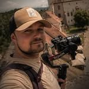

01 / 04
Video pro firmy
Video pro firmy, které prodává. Natáčím firemní příběhy, reklamy, dokumenty i záznamy událostí a fotím také firemní fotografie.
Zeptat se na termín→


Fotografie a film, ke kterým se vrátíte
Zeptat se na termín →(01) Ahoj
Jmenuji se Filip Malý a jsem fotograf a kameraman z Hradce Králové . Natáčím videa pro firmy a svatební filmy , fotím portréty, rodiny i filmové a tematické příběhy . Nevěřím na strojené pózy, chci zachytit vás takové, jací jste.
1 253lidí sleduje mou práci na Instagramu
825příspěvků s fotkami a příběhy
(02) Co dělám
01 / 04
Video pro firmy, které prodává. Natáčím firemní příběhy, reklamy, dokumenty i záznamy událostí a fotím také firemní fotografie.
Zeptat se na termín→02 / 04
Přirozené portréty, kreativní filmové a fantasy příběhy i citlivě zpracovaný nude art. Pracuji se světlem tak, aby vynikla vaše jedinečnost.
Zeptat se na termín→Dále nabízím
Elegantní svatební filmy s filmovou atmosférou a fotografie, které zachytí celý den. Během svatby jsem nenápadný, ale ve správný moment na správném místě.
↗Přirozené focení bez nucených póz, nejčastěji venku v Hradci Králové při západu slunce nebo u vás doma. Pro ty, kdo chtějí víc než jeden den, nabízím celoroční Rodinný příběh.
↗(04) Postup
Od první zprávy po hotovou galerii.
Krok 1 z 4
Zavoláme si nebo se potkáme. Chci vědět, kdo jste, co je pro vás důležité a jakou atmosféru má výsledek mít.
Krok 2 z 4
Společně vymyslíme styl, náladu, oblečení i lokaci. U firemního videa probereme, co má video říct a komu.
Krok 3 z 4
Vedu vás přirozeně a bez stresu. Pracuji nenápadně, aby vznikly opravdové momenty, ne strojené pózy.
Krok 4 z 4
Pečlivě upravím fotografie i střih bez ztráty autenticity. Výsledek dostanete v soukromé online galerii nebo jako hotový film.

Nechci z vás dělat modely. Chci zachytit vás.
(05) Za objektivem
Fotím a natáčím příběhy. Autenticky, přirozeně a nadčasově. Tvořím svatební filmy, rodinné a portrétní fotografie, fantasy projekty i profesionální video a fotografie pro firmy. Každý příběh zachycuji osobně.
Nechci z vás dělat modely. Zajímají mě vaše pohledy, doteky, smích i ticho mezi větami. Nejhezčí záběry podle mě vznikají ve chvíli, kdy zapomenete, že vás někdo natáčí, a proto se snažím být nenápadný, ale vždy ve správný moment na správném místě.
Hodně mě baví práce se světlem, a tak o něm i učím. Na kurzech svícení a na profilu @naucim_te_svitit ukazuji, jak se světlem pracovat, aby vynikl člověk i atmosféra.

Filip
Filip Malý · Fotograf a kameraman
Rodinné focení nejčastěji venku v Hradci Králové při západu slunce, případně u vás doma. S výběrem místa poradím. Za svatbami a firemními projekty jezdím po celé ČR.
60 minut focení, 10 profesionálně upravených fotek, 10 vytištěných fotek 10 × 15 cm a soukromou online galerii. Po Hradci Králové je doprava v ceně a další fotky si můžete dokoupit po 350 Kč za kus.
U rodinného focení posílám náhledy do 3 dnů a finální galerii do 14 pracovních dnů od vašeho výběru. U svateb a videí se termín odvíjí od rozsahu, domluvíme ho předem.
Ano, nabízím svatební film i fotografie. Hostům můžu připravit i Momentky, společné album, kam sami nahrají své fotky. K plánování si můžete zdarma stáhnout můj svatební průvodce s checklistem.
(07) Kontakt
Napište pár vět o tom, co si představujete, a termín, který se vám hodí.
info@filipmaly.cz